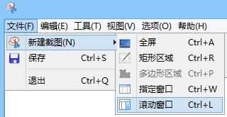
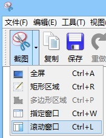
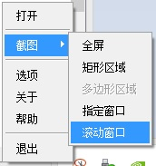
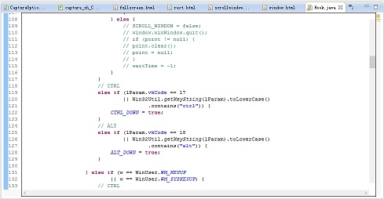

滚动窗口窗口截图
一、使用指定窗口截图
1. 点击菜单栏“文件-新建截图-滚动窗口”进行滚动窗口截图

2. 点击工具栏“截图-滚动窗口”进行滚动窗口截图

3. 右击系统托盘图标，选择“截图-滚动窗口”进行滚动窗口截图

4. 使用快捷键Ctrl+L进行滚动窗口截图
二、截图过程中的操作
1. 进入截图状态后，鼠标移动到需要截图的窗口上方，稍作等待，
截图时窗口周围出现黑色框，并自动进行滚动条滚动

2. 如果窗口不含滚动条，则操作与指定窗口截图相同